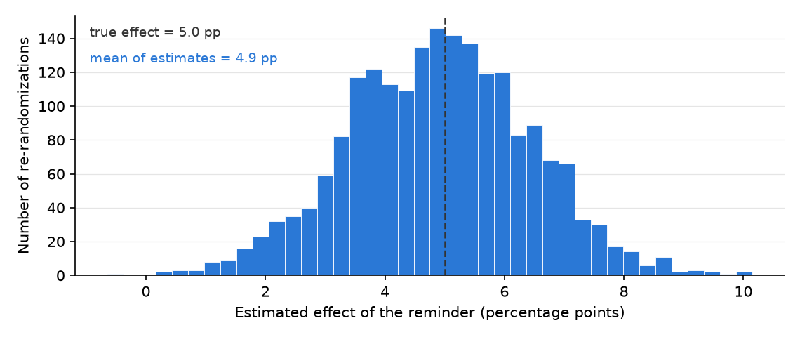

18 Experimental Causal Research
This chapter is part of a book in active development and has not yet been through the author’s review. Content may change as the review advances.

The research decision. Decide whether the way treatment was assigned in your study lets you read a plain difference in outcomes as a cause, and then name exactly which quantity that difference estimates and whose effect it is. Nobody else can confirm how you sorted your units, so no tool gets to declare that your design proves cause.
18.1 Why this decision matters
The decision on the table: whether your difference in outcomes has earned the word “because”, and whose effect that difference actually describes.
“Everyone shows me the treated group did better. So did the patients who were healthier to begin with, or more organized, or younger. ‘Better after treatment’ is not ‘the treatment worked.’ Show me that chance, not the kind of patient, decided who got treated, and tell me exactly who your number speaks for.” — a clinical-trial reviewer, reading a claim that a new reminder improved medication adherence
A causal claim is the hardest thing you will assert in this book. A tool can now clean your data, run the comparison, and hand you a confident number in seconds. That speed is the danger. If you paste back “the treatment worked,” you have signed your name to a claim you have not earned. The reviewer above does not care how fluent the output sounded. They care how treatment was assigned and who the number describes. This chapter gives you the one move that earns the word because, and the discipline to say who it applies to.
18.2 The concept
This chapter follows the experimental-causal pathway of the design library in RDSS, where you assign the conditions yourself; the potential-outcomes vocabulary below follows Holland (Blair et al. 2023; Holland 1986).
Start with a causal question, a question about what would change if you intervened rather than what merely goes together. Example: “does a text reminder raise the share of patients who refill on time?”, not “do patients who got reminders refill more?”
For one unit, one patient, write two numbers. The potential outcome Y(1) is what that unit would show with the treatment. Example: whether Ms. R refills on time if she gets the texts. The potential outcome Y(0) is what the same unit would show without it. Example: whether that same Ms. R refills if she gets nothing. The causal effect for her is Y(1) minus Y(0). Now the rule that governs the whole field, the fundamental problem of causal inference: for any one unit you only ever see one of those two numbers (Holland 1986). Ms. R was either texted or not, never both, so her individual effect is unrecoverable.
So you give up the individual and chase the average. The average treatment effect (ATE) is the average of Y(1) minus Y(0) across all your units, the typical effect rather than any one unit’s. Example: on average, the reminder raised on-time refills by a few points. One move unlocks an honest estimate of it. Random assignment lets pure chance, a coin flip, decide which units get treated. Example: a computer flips a fair coin for each patient. Chance knows nothing about health or organization, so the two groups it builds are alike on average, and the untreated group’s outcome honestly stands in for what the treated group would have done untreated. That is what random assignment defeats: a confounder, a third trait that pushes on both who gets treated and the outcome. Example: more organized patients both refill anyway and are easier to enroll, so a reminder looks effective even when it did nothing. Randomizing breaks the link between any trait and who gets treated, and that broken link is the entire reason an experiment can say because.
18.3 A worked example
You run a clinic and want to know whether a daily text-message reminder raises the share of hypertension patients who refill their blood-pressure prescription on time. You enroll 800 patients and let a computer flip a fair coin for each: 400 to the reminder arm (the treatment), 400 to a no-text control arm.
For Ms. R, Y(1) is whether she refills if she gets the texts, and Y(0) is whether she refills if she gets nothing. You will only ever see one. Across all 800, you estimate the ATE as the difference in on-time refill rates between the arms. Say the reminder arm refills at 71 percent and the control arm at 62 percent, a 9-percentage-point gap. Because the coin, not the patient’s organization, sorted the arms, that 9 points is an honest estimate of the reminder’s average effect.
Now the honesty test. Suppose some patients stopped answering follow-up before the final measurement. Attrition is a unit’s outcome going missing after assignment. Example: patients who change phone numbers, move away, or quietly drop out, so their final refill rate is never recorded.
Here is the part that trips people. It is tempting to hand the 9-point gap to “the patients who stayed.” Be careful with that sentence. When the treatment itself can change who stays, the reminder arm shows you patients who stayed with reminders while the control arm shows you patients who stayed without them, and those two observed groups need not be the same kind of people. Their difference is a complete-case contrast, a comparison of whoever happened to be measured in each arm. An effect for some shared group of stayers may well exist as an idea, but this contrast does not deliver it without assumptions you would have to state and defend.
When does the contrast actually mislead? Not simply because people left, and not simply because the arms lost different shares. The damage comes when who leaves is tied to what their outcome would have been. If the reminder arm loses its sickest patients, the survivors’ average rises for reasons that have nothing to do with the reminder working. Uneven retention between arms is a warning light worth reporting every time, but it is only a warning light: arms can lose different shares of similar patients with little harm, and lose identical shares of very different patients with a lot. The rates alone cannot convict or acquit; they tell you where to dig.
So report retention by arm first, before any effect, then ask the sensitivity question a stranger will ask you: how bad would the missing outcomes have to be to change the conclusion? Example: suppose a quarter of the reminder arm went unmeasured. If those patients would have refilled at only 50 percent, the arm’s true average is 0.75 × 71 + 0.25 × 50, about 66, and the 9-point gap shrinks to about 4. If they matched the patients you did measure, the gap holds at 9. Working two or three such “what ifs” tells you whether your finding survives honest pessimism, and that range belongs in the write-up. Attrition has two siblings the lab drills. Noncompliance is assigned units that never take the treatment, like patients who changed numbers and never got a text. Spillover is treatment reaching the control arm, like a texted patient reminding an untreated friend. Each one leaves the coin flip untouched and still changes which quantity your number describes. Naming that quantity is the decision this chapter equips.
That you can never see both outcomes for the same unit, which is why the comparison has to be built by design, is the fundamental problem of causal inference (Holland 1986).
The block below runs the trial twice over the same patients: once on everyone randomized, once on only those still measurable at the end. Watch the retention line while you read the second gap.
import numpy as np, pandas as pd
SEED = 464
rng = np.random.default_rng(SEED)
n_arm = 400
arms = {}
for arm, refills, dropout_if_disorganized in (("reminder", 284, 0.16),
("control", 248, 0.38)):
organized = rng.random(n_arm) < 0.5 # a trait you never observe
priority = organized + rng.normal(0, 0.6, size=n_arm)
refill = np.zeros(n_arm, dtype=bool)
refill[np.argsort(-priority)[:refills]] = True
# attrition the TREATMENT changes: reminders keep disorganized patients in
dropped = rng.random(n_arm) < np.where(organized, 0.04,
dropout_if_disorganized)
arms[arm] = {"refill": refill, "seen": ~dropped, "organized": organized}
r, c = arms["reminder"], arms["control"]
print(f"reminder arm, everyone randomized : {r['refill'].mean()*100:.0f}%")
print(f"control arm, everyone randomized : {c['refill'].mean()*100:.0f}%")
print(f"gap : "
f"{(r['refill'].mean() - c['refill'].mean())*100:+.0f} pp")
cc = r["refill"][r["seen"]].mean() - c["refill"][c["seen"]].mean()
print(f"\ngap among those still measurable : {cc*100:+.0f} pp")
print(f"retention : {r['seen'].mean()*100:.0f}% vs "
f"{c['seen'].mean()*100:.0f}%")
print(f"organized share of those seen : "
f"{r['organized'][r['seen']].mean()*100:.0f}% vs "
f"{c['organized'][c['seen']].mean()*100:.0f}%")
print("\nthe last line is the problem: the two arms no longer describe the")
print("same kind of patient, so the second gap is not an effect on anyone")18.4 A seeded simulation
Randomization is a promise about procedure: assign treatment by coin flip, and the difference in means is right on average, with a wobble you can quantify. The code below keeps that promise visible. It gives 200 patients both of their potential refill rates — without a reminder, and with a reminder that truly adds 5 percentage points — then reruns the random assignment 2,000 times and records the estimate each assignment would have produced. The seed makes every rerun reproduce this exact figure.
import numpy as np
import matplotlib.pyplot as plt
SEED = 464
rng = np.random.default_rng(SEED)
n, tau = 200, 5.0 # true effect: +5 points
y0 = np.clip(rng.normal(70, 12, n), 20, 95) # refill rate, no reminder
y1 = y0 + tau # exactly +5 for every patient
estimates = []
for _ in range(2000):
treated = rng.permutation(n) < n // 2 # a fresh coin-flip assignment
estimates.append(y1[treated].mean() - y0[~treated].mean())
estimates = np.array(estimates)
fig, ax = plt.subplots(figsize=(7.6, 3.2))
ax.hist(estimates, bins=40, color="#2a78d6", edgecolor="white", lw=.4)
ax.axvline(tau, color="#333333", ls="--", lw=1.2)
ax.text(.02, .92, f"true effect = {tau:.1f} pp", color="#333333",
fontsize=9, transform=ax.transAxes)
ax.text(.02, .82, f"mean of estimates = {estimates.mean():.1f} pp",
color="#2a78d6", fontsize=9, transform=ax.transAxes)
ax.set_xlabel("Estimated effect of the reminder (percentage points)")
ax.set_ylabel("Number of re-randomizations")
plt.show()
The histogram is the randomization distribution: every estimate this same trial could have produced under a different coin flip. It centers almost exactly on the truth (mean of estimates 5.0 against a true 5.0), which is the “right on average” promise, kept and visible. But most runs landed between about 2 and 8 points, and the extremes stretched from below zero to above 10. Your one realized trial is a single draw from this histogram, and that spread is the uncertainty an honest report must carry next to the estimate. In the companion notebook, double n and watch the histogram narrow: sample size buys precision — it is randomization that buys truth on average.
18.5 What attrition does to that promise
The code below keeps the coin flip exactly as honest as before and changes one thing: who is still measurable at the end (National Research Council 2010). Every one of 2,000 patients gets a true benefit of 5 points. Under control, patients drop out only if their health is poor. Under the reminder, the cut is harsher, so more of the sickest patients go unmeasured. Then the study is re-randomized 2,000 times, and each time we take the plain difference between the patients we can still see.
import numpy as np
import matplotlib.pyplot as plt
SEED = 464
rng = np.random.default_rng(SEED)
N, reps, tau = 2000, 2000, 5.0
health = rng.normal(size=N)
y0 = 60 + 10 * health + rng.normal(0, 5, size=N) # refill rate, no reminder
y1 = y0 + tau # ... with the reminder
r0 = health > -0.8 # still measurable under control
r1 = health > -0.2 # ... under the reminder: the sickest drop out
contrasts = []
for _ in range(reps):
z = rng.permutation(N) < N // 2 # an honest coin flip
y = np.where(z, y1, y0)
retained = np.where(z, r1, r0)
contrasts.append(y[z & retained].mean() - y[(~z) & retained].mean())
contrasts = np.asarray(contrasts)
print("true effect for everyone enrolled:", np.mean(y1 - y0))
print("average complete-case contrast: ", contrasts.mean().round(2))
Look at where the dashed line sits. The truth is 5 points, and not one of the 2,000 re-randomizations produced a contrast anywhere near it. They pile up around 8.1. Nothing here is a fluke of one unlucky sample, and no amount of extra data would pull the pile leftward, because the tilt is not noise. Dropping the sickest patients from one arm raises that arm’s average, and the gap inherits the lift.
Notice what the simulation did not do. It never touched the coin flip, and it never made the reminder work better than 5 points for anybody. Random assignment did its whole job. The damage happened afterward, when outcomes went missing in a way the treatment itself controlled. That is why retention by arm belongs in your report before any effect does: 59 percent of the reminder arm was still measured against 80 percent of the control arm. Read that gap as a warning light, not a verdict. What biased this contrast was not the unequal rates themselves but the fact that leaving was tied to health, which also drives the outcome. A design can lose different shares of similar patients almost harmlessly, and equal shares of very different patients disastrously. The rates tell you where to dig; the digging is the sensitivity work from the honesty test above.
18.6 Within-unit designs: crossover, switchback, and N-of-1
Go back to Ms. R. You see her Y(1) or her Y(0), never both. Some treatments soften that problem without solving it. A reminder can run for two weeks and stop for two, and her home blood-pressure cuff records both stretches: never both outcomes at once, but each condition at nearby moments.
A within-unit design is a randomized experiment in which the same unit receives more than one condition, in an order chosen by chance. Example: each of 24 patients gets two weeks with reminders and two weeks without, and a coin flip decides which comes first. Each person becomes their own comparison, so the large differences between people (one runs at 120, another at 150) drop out of the contrast. A crossover design is the classic two-condition version, where the groups differ only in the order of treatment. Example: half the patients get reminder-then-none, half none-then-reminder (Senn 2002).
Three problems come with that pairing. A period effect is a change in outcomes that comes from when a measurement happens rather than from the treatment. Example: blood pressure drifts upward as winter arrives, whatever you do. Put half the patients in each order and average the two orders’ results, and this drift cancels. Carryover is a treatment’s effect lingering into the next period after the treatment stops. Example: patients who built a pill-taking habit during the reminder weeks keep some of it in the weeks without texts, so their “control” readings look better than a true control. A washout period is a gap between conditions, meant to let the first treatment’s effect fade, whose readings you do not analyze. Example: a week of no reminders and no measurement between the two periods. A washout shrinks carryover; it cannot guarantee that carryover is gone, and a habit may never fade at all. How long the gap must be comes from the biology or the behavior, and that judgment is yours.
Do not plan to settle carryover with a test on the same data. In a two-period crossover, a preliminary test for carryover has little power, and the old recipe of testing first and then choosing the analysis misstates its own false-alarm rate, even when no carryover exists (Freeman 1989; Senn 2002). Carryover is handled by design: a treatment whose effect plausibly switches off, a washout long enough by outside knowledge, and a written argument for both.
The third problem is counting. Twenty-four patients measured every day for twenty-eight days give 672 readings, but they remain 24 people. Readings from the same person share that person’s baseline, and today’s reading leans on yesterday’s. Treat them as 672 independent cases and your interval shrinks for no reason.
The block below builds 24 patients whose reminder truly lowers pressure by about 4 points, then analyzes the same trial four ways. Watch the standard error (SE) beside each estimate: the typical distance between an estimate and the truth if you reran the trial with fresh coin flips. A 95% interval runs about two standard errors either side of the estimate. With only 12 people per group the multiplier comes from the t distribution and is 2.07, a little wider than 2, and the code uses it.
import numpy as np
from scipy import stats
SEED = 464
rng = np.random.default_rng(SEED)
n, days = 24, 14 # 24 patients, two 14-day periods
base = rng.normal(135, 15, n) # people differ a LOT from each other
gain = -4 + rng.normal(0, 3, n) # reminder lowers pressure about 4 points
first = rng.permutation(n) < n // 2 # coin flip: reminder first or second
on = np.stack([first, ~first], axis=1) # patient x period: reminder switched on?
e = np.zeros((n, 2, days)); e[..., 0] = rng.normal(0, 8, (n, 2))
for t in range(1, days): # today's reading leans on yesterday's
e[..., t] = 0.7 * e[..., t - 1] + rng.normal(0, 5.7, (n, 2))
def readings(carry): # patient x period x day
lingers = np.stack([0 * first, carry * first], axis=1)
effect = np.where(on, 1.0, lingers) * gain[:, None]
drift = np.array([0.0, 2.0]) # period 2 runs 2 points higher anyway
return base[:, None, None] + drift[None, :, None] + effect[..., None] + e
def crossover(y): # each patient against themself
d = np.where(first, 1, -1) * (y[:, 0].mean(1) - y[:, 1].mean(1))
est = (d[first].mean() + d[~first].mean()) / 2 # the drift cancels
return est, np.sqrt(d[first].var(ddof=1) + d[~first].var(ddof=1)) / 2 / np.sqrt(12)
def show(label, est, se, df): # estimate, SE, 95% interval from t
m = stats.t.ppf(0.975, df)
print(f"{label}: {est:+.1f} (SE {se:.1f}, 95% {est - m * se:+.1f} to {est + m * se:+.1f})")
y = readings(carry=0.0) # suppose the washout cleared the effect
a, b = y[first, 0].mean(1), y[~first, 0].mean(1)
show("period 1 only, 12 vs 12 people ", a.mean() - b.mean(),
np.sqrt(a.var(ddof=1) / 12 + b.var(ddof=1) / 12), 22)
show("crossover, each person vs self ", *crossover(y), 22)
dev = y - y.mean(axis=(1, 2), keepdims=True) # 672 readings, pooled
r1, r0 = dev[on].ravel(), dev[~on].ravel()
show("same, 672 readings as 672 cases", r1.mean() - r0.mean(),
np.sqrt(r1.var(ddof=1) / r1.size + r0.var(ddof=1) / r0.size), 670)
show("crossover, effect lingers ", *crossover(readings(0.75)), 22)
print(f"true average effect : {gain.mean():+.1f}")
print("\npairing buys precision; readings are not new people;")
print("a lingering effect biases the estimate, here toward zero")Read the four lines against the true average effect, a drop of 4.1 points. Using only the first period throws away the pairing and compares 12 people with 12 others: +5.4, the wrong sign, with a standard error of 7.1 and a 95% interval from −9.4 to +20.2. The crossover compares each person with themself and lands at −5.7 with a standard error of 1.2, an interval of −8.2 to −3.2 that contains the truth. Same patients, a standard error about six times smaller. Now count readings as people. The estimate does not move, but the standard error falls to 0.5, and the interval of −6.8 to −4.6 misses the true value entirely. That narrow interval is false precision, and nothing in the printout warns you.
The fourth line keeps every reading and every coin flip and adds one thing: three quarters of the reminder’s effect lingers into the no-reminder weeks for patients who got it first. The estimate shifts by 1.9 points, from −5.7 to −3.8, toward zero. Do not read −3.8 as the better answer because it sits nearer the truth. In this draw the noise pushed the crossover estimate low, and carryover pushed it back. On another draw the same pull would drag an accurate estimate toward zero. The direction is not a law, either. This lingering effect has the same sign as the treatment, so it pulls toward zero; a rebound after the treatment stops would push the estimate the other way. The printout gives no sign of either, which is why the case against carryover has to be made before the data arrive.
A switchback experiment is a within-unit design in which a whole market or system switches between conditions over randomized time slots. Example: a food-delivery platform turns a new pricing rule on or off for a whole city in randomized two-hour blocks. Businesses use it when splitting customers would let the arms interfere, since treated and untreated orders compete for the same couriers. Carryover returns as orders placed under one rule still being delivered in the next block. Bojinov, Simchi-Levi, and Zhao derive the best switching schedule for an assumed length of carryover, study what happens when that length is wrong, offer a data-driven way to estimate it, and give exact randomization tests and conservative intervals for the result (Bojinov et al. 2023). The carryover length is again an assumption you state, not a detail the software settles.
An N-of-1 trial is a within-unit experiment run on a single person, with several randomized treatment periods, to decide what works for that person. Example: a patient alternates two blood-pressure drugs over three randomized pairs of months, and she and her doctor pick the one that lowered her readings more. The counting problem is sharpest here. Ninety daily readings per drug are still three randomized comparisons, and the interval must be built from those three pairs, not from the days. Its reporting standard, CENT 2015, extends the checklist used for ordinary randomized trials to single N-of-1 trials and to series of them (Vohra et al. 2015).
All three ask a causal question and sit on the experimental causal pathway, because you assign the order by chance. Name the quantity each design delivers. The crossover estimates the average short-run effect of the treatment for the people you enrolled, under the rotation you ran. The switchback estimates how the market’s outcome differs between keeping the rule on and keeping it off long enough for carryover to play out, averaged over the slots you ran, in that one market. The N-of-1 trial estimates the effect for one person over the months of the trial, and its reach stops at that person. The warrant is the randomized order plus two assumptions you must defend: that the treatment’s effect switches off once the treatment does, and that the condition itself stays stable enough for each unit to return to where it started. A within-unit design cannot answer for a treatment that cures, teaches, or permanently changes a unit, because a patient who learned a habit cannot be put back to the start. The reminder above is exactly that risk. If the texts build a lasting habit, the crossover estimates something smaller than the effect you care about, and the parallel design earlier in this chapter is the safer route. Reach follows the same rule as any experiment: a population wider than the people you enrolled needs the sampling license, not the coin flip.
An AI tool is a strong arm here: it can generate a balanced random order and write the per-person difference code. Where it can fail is the counting. Handed a long table of readings, a tool may fit one model across all rows and report the narrow interval from the third line above, as if every row were a new person. It may also offer to test for carryover first and pick the analysis from the result, the recipe the carryover paragraph above warns against. Deciding whether the effect switches off, how long the washout must be, and whose effect the number describes stays with you. When several people each run their own N-of-1 trial, combining their results is a small synthesis problem, and the evidence synthesis chapter shows how to pool estimates without hiding how much they disagree.
18.7 An AI failure case
You paste your trial into the tool and it reports, with full confidence, “the reminder raised on-time refills by 12 points, and the effect is significant.” The code runs without a single error. Here is the trap. A third of the reminder arm, the patients whose blood pressure was worst, stopped answering follow-up and left the study, so the tool computed the gap among the patients who stayed and labeled it “the effect of the reminder.” That is a silent scope change. The number is a complete-case contrast: it is not the effect for everyone you enrolled, and dropping the sickest patients from one arm pushed it up.
You catch it by checking retention by arm and who was lost, not by re-reading the fluent paragraph. The reminder arm lost far more patients, and the ones it lost were the sickest, so who stayed was tied to what the outcome would have been. That makes the 12 points a complete-case contrast: not the effect for everyone enrolled, and not automatically an effect for any shared group of stayers, since each arm produced its own. A green check is not a correct result. You rewrite the sentence to report retention in both arms, to say plainly that this trial as run does not deliver the effect for everyone enrolled, and to run the what-if from the honesty test: how low would the missing patients’ refill rates have to be before the finding flips?
18.8 It is your turn
You are working inside Studio 5: Develop the pathway. This lesson serves the experimental-causal pathway. If your declared pathway is different, skim it and work the lesson that matches; the studio page routes you.
Your design is declared and diagnosed. This step asks whether it has earned the word “because”, and makes you say out loud whose effect your number is.
The hands-on half of this section lives in the chapter’s companion notebook: open it in Colab with the badge at the top, and work the steps there.
Commit your own answer first, then delegate. Each prompt below is a checkable job, not a request for a verdict. Work them as a loop. The first answer is a draft: find the claim you cannot check, say so in your next message, and run it again. Some tools will run that whole loop unattended and hand you a finished analysis. The finished look is exactly what makes the questions in this chapter worth asking before you accept it.
Three calls never leave your hands. You decide whether random assignment actually happened in your study, because a tool cannot see how you sorted the arms. You decide which quantity your number estimates and for whom, the effect for everyone enrolled, or whether attrition has left you without a causal number at all until you state an assumption and test how much it matters. And you decide whether the effect is large enough to act on, and whether it is even ethical to randomize real patients and withhold something from the control arm. You own the final sentence, its boundary, and its uncertainty.
Write your treatment and your outcome as two short phrases. Then write one sentence on how a unit ends up treated. If the answer is anything other than “a chance device decided,” this pathway is not yours yet.
Take one real unit from your study and write Y(1) and Y(0) for it in plain words. Circle the one you will actually get to see. That circle is the fundamental problem of causal inference in your own project’s handwriting.
Name the quantity your estimate targets and for whom, in one sentence a stranger could repeat back to you correctly. “Everyone I enrolled” is the default. “Only those who complied” and “only those who stayed” are both groups your treatment may have helped create, so neither is available from a simple subgroup comparison: naming one commits you to assumptions you must state. If attrition touched your data, say what you assume about the people you did not measure, and show how the conclusion moves when that assumption bends.
Red-team your effect.
My claim: "the reminder raised on-time refills by 9 points." Act as a hostile clinical-trial reviewer. Name every way dropout, noncompliance, or spillover could make this number describe a different group than everyone I enrolled [@gerber2012field]. Do not rewrite the claim for me.After running, verify: if it only praises the design, push back and demand the single worst threat, then test it against your retention by arm. Counters sycophantic agreement (praise that reviews your ego, not your evidence).
Name the threat nearest your design, whether attrition, noncompliance, or spillover, and the check you will run in your own data to see how bad it is: retention by arm, take-up by arm, contact between arms.
List the assumptions to verify.
Here is my analysis of a randomized reminder trial: [paste your cell]. List, as a table, every assumption my causal reading rests on: that assignment was truly random, that no one dropped out in a way tied to the outcome, that the control arm got no treatment. For each, say what I would check in my own data to confirm it.After running, verify: check each listed assumption against your actual design and retention numbers before you accept the causal reading. Counters silent scope change (an association quietly reported as a settled cause).
If you cannot randomize, run steps 1 to 4 as a drill, then name the confounder that random assignment would have killed for you and the observational move you will use in its place.
Log the step in your AI Research Ledger, and verify at least one output with a named method from the Verification Guide. This chapter’s result deserves two: alternative code, recomputing your difference by hand and landing on the same number, and simulation, shuffling the treatment labels thousands of times to see how rarely chance alone produces a gap as big as yours. An AI reviewer may run the checks with you; the decision to accept or reject stays yours.
Locate the standard tool.
Act as a statistics assistant. I ran a two-arm randomized trial and computed a plain difference in on-time refill rates between a reminder arm and a control arm. Before any code, name the standard way to attach a 95% interval to a difference in two proportions, and one resampling alternative, citing where each is documented. Only name methods you are confident exist.After running, verify: open the cited documentation and confirm the method and its formula exist as described. Counters confident fabrication (an invented method name arrives as confidently as a real one).